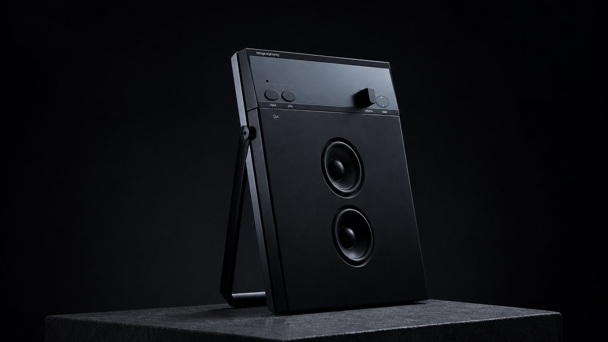
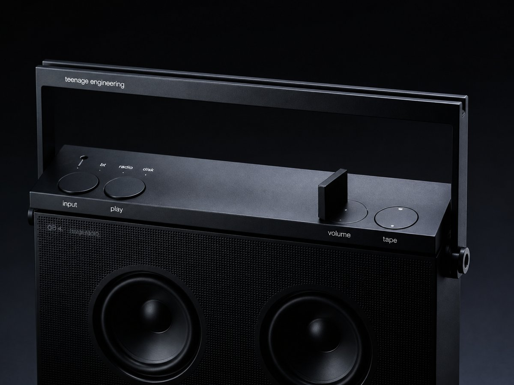
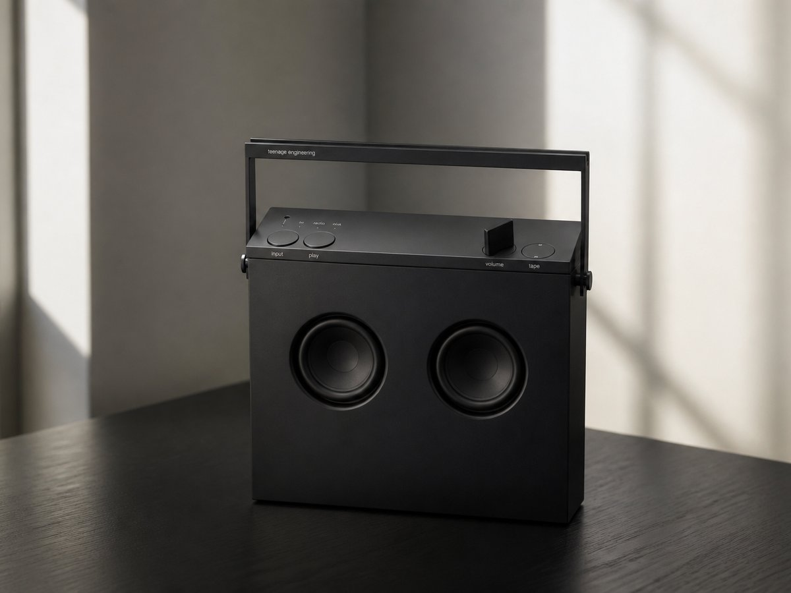
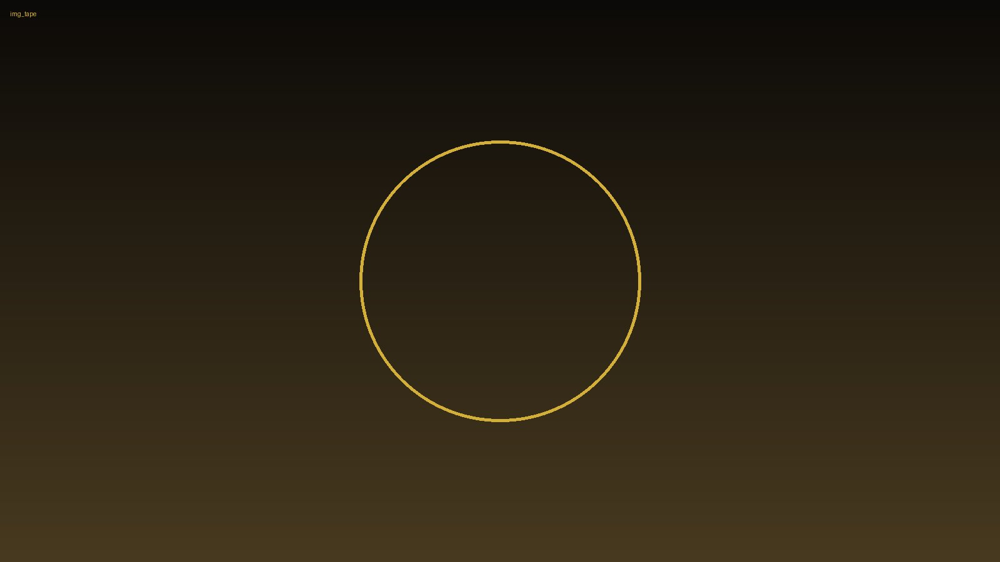
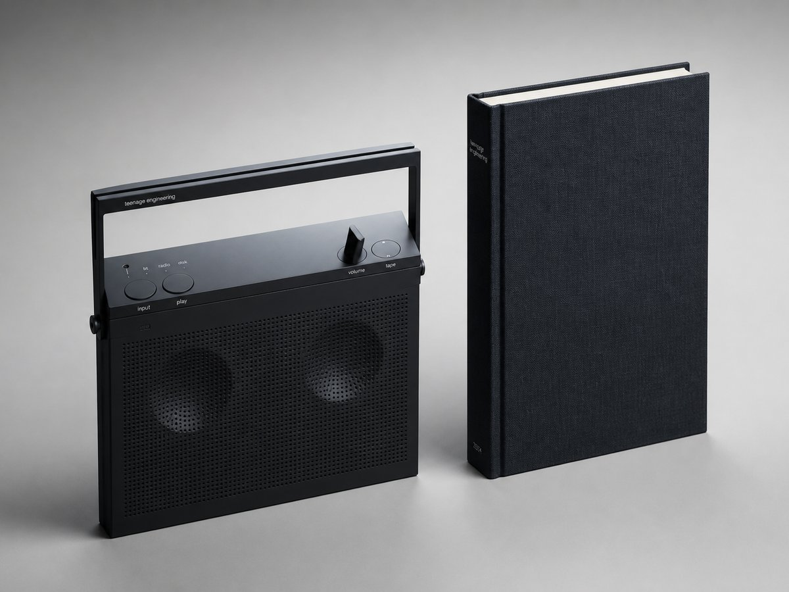
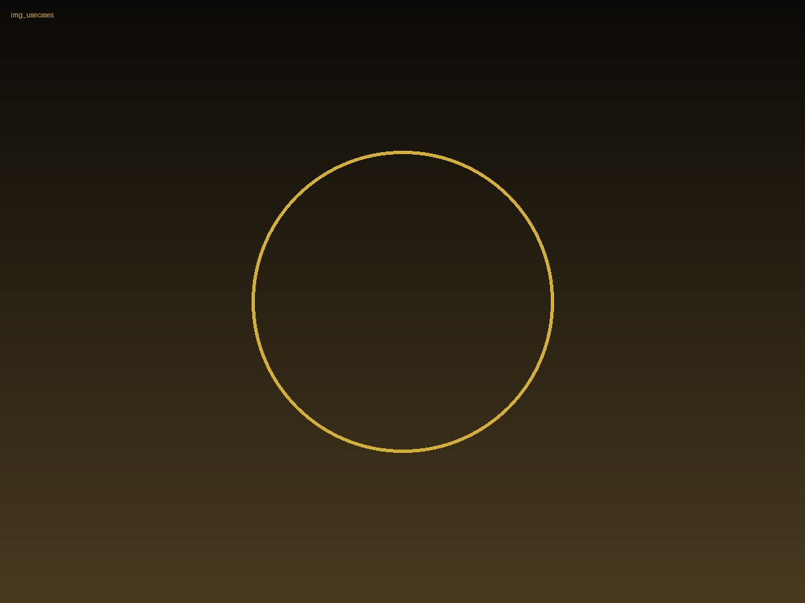

Magické rádio
Magické rádio, které je objekt i nástroj.
OB–4 magic radio je orthobook pro lidi, kteří chtějí jeden objekt na stůl, do studia i do obýváku. Ultratenké tělo z frézovaného hliníku, nosná rukojeť jako stojan a zvuk, který působí větší než jeho stopa. Přepínejte mezi Bluetooth 5 LE, FM a 3,5mm line-in — a nechte prostor zaplnit 4 na míru vyvinuté reproduktory s bass reflex kanálem.

Zvuk, který má váhu
Zvuk, který má váhu
Za povrchem se skrývá hi-fi, které hraje otevřeně a přirozeně: zesilovač 2×38 W class D, frekvenční rozsah 52–25000 Hz a bass reflex laděný na plný, kontrolovaný základ. OB–4 není jen přenosný reproduktor; je to přesný nástroj s velkým zvukem a čistou scénou.


Tři dny bez zásuvky
Tři dny bez zásuvky
výdrž baterie až 72 hodin na FM, 40 hodin na Bluetooth. To znamená dlouhé víkendy bez nabíječky, hraní venku i večery, které se neptají na zásuvku. Přesto si OB–4 zachovává klidnou formu a hmotnost 1,7 kg, takže se pořád cítí jako něco, co si prostě vezmete s sebou.

Smyčka, která žije
Smyčka, která žije
Srdcem zážitku je nepřetržitá smyčková páska s rolující 2hodinovou nahrávkou. Ovládání je intuitivní a mechanické, takže s hudbou pracujete rukama — jako s objektem, ne jako s menu. Každý pohyb má záměr a každý záměr slyšíte.
Kniha z kovu
Kniha z kovu
Rozměry 232,5×284×57,5 mm dělají z OB–4 elegantní orthoformát: stojí vzpřímeně, čte se jako kniha a na polici působí jako přesně navržený průmyslový artefakt. Nosná rukojeť jako stojan přidává pohodlný úhel poslechu a zároveň zachovává čistou, skandinávskou siluetu.

OB–4
stojí vzpřímeně čte se jako knihaOB–4
přesně navržený průmyslový artefakt na polici i na stoleOB–4
čistá, skandinávská silueta s rukojetí jako stojanemKamkoliv patří hi-fi
Kamkoliv patří hi-fi
V kuchyni, ve studiu, v ateliéru i na terase funguje OB–4 jako designový objekt i pracovní nástroj. Je to reproduktor, který vypadá stejně přesvědčivě vypnutý jako zapnutý, a který umí dát prostoru charakter bez zbytečné demonstrace.

Vezměte si magii domů
Vezměte si magii domů
Pořiďte si OB–4 magic radio za 13 990 Kč a přidejte do prostoru kus skandinávské techniky, kterou je radost používat každý den. Vyberte si svůj kus magie — a poslouchejte jinak.